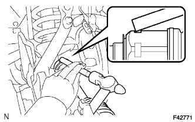

ПЕРЕДНИЙ ПРИВОДНОЙ ВАЛ В СБОРЕ > УСТАНОВКА |
| 1. УСТАНОВИТЕ ПЕРЕДНИЙ ПРИВОДНОЙ ВАЛ В СБОРЕ |
|  |
Смажьте шлицы вала внутреннего шарнира в сборе трансмиссионной жидкостью.
Совместите шлицы валов и установите приводной вал с помощью латунного стержня и молотка.
| 2. УСТАНОВИТЕ ПЕРЕДНИЙ ДАТЧИК ЧАСТОТЫ ВРАЩЕНИЯ |
Установите датчик частоты вращения и закрепите его болтом.
| 3. УСТАНОВИТЕ КРЕПЛЕНИЕ ЛЕВОГО НИЖНЕГО ШАРОВОГО ШАРНИРА |
Установите крепление нижнего шарового шарнира и закрепите его 2 болтами.
| 4. ПОДСОЕДИНИТЕ НАКОНЕЧНИК ЛЕВОЙ РУЛЕВОЙ ТЯГИ В СБОРЕ |
Установите наконечник рулевой тяги на поворотный кулак и закрепите его гайкой.
Установите новый шплинт.
| 5. ЗАВЕРНИТЕ ГАЙКУ ВАЛА ПЕРЕДНЕЙ ПОЛУОСИ |
Очистите резьбовые части приводного вала и гайки вала полуоси растворителем, не содержащим смолистых веществ.
Заверните гайку вала передней полуоси.
Установите регулировочный колпачок и шплинт.
| 6. УСТАНОВИТЕ СМАЗОЧНЫЙ КОЛПАЧОК СТУПИЦЫ ПЕРЕДНЕГО КОЛЕСА |
Установите новый смазочный колпачок ступицы колеса.
| 7. ДОЛЕЙТЕ МАСЛО ДЛЯ ДИФФЕРЕНЦИАЛА |
Снимите пробку горловины дифференциала и прокладку.
 |
Залейте в чашку заднего дифференциала в сборе столько масла, сколько требуется, чтобы уровень масла попал в зону 0-5 мм (0-0,197 дюйма) у нижней кромки отверстия наливной горловины.
| Тип дифференциала | Тип и вязкость масла | Заданные условия |
| Стандартный | Фирменное масло для дифференциала LT 75W-85 GL-5 от компании Тойота или аналогичное | 1,35-1,45 л (1,43-1,53 кварты США, 1,18-1,27 английской кварты) |
| Тип дифференциала | Тип и вязкость масла | Тип кузова | Заданные условия |
| Стандартный | Фирменное масло для дифференциала LT 75W-85 GL-5 от компании Тойота или аналогичное | Для 5-дверных моделей | 2,65 - 2,75 л (2,80 - 2,91 кварты США, 2,33 - 2,42 английской кварты) |
| Для 3-дверных моделей | 2,15 - 2,25 л (2,27 - 2,38 кварты США, 1,89 - 1,98 английской кварты) | ||
| С блокировкой дифференциала | Фирменное масло для дифференциала LT 75W-85 GL-5 от компании Тойота или аналогичное | Для 5-дверных моделей | 2,60 - 2,70 л (2,75 - 2,85 кварты США, 2,29 - 2,38 английской кварты) |
| Для 3-дверных моделей | 2,15 - 2,25 л (2,27 - 2,38 кварты США, 1,89 - 1,98 английской кварты) |
Установите новую прокладку и пробку наливной горловины дифференциала.
Совершите поездку на автомобиле и снова проверьте уровень масла.
Если необходимо, добавьте масло для дифференциала.
| 8. ПРОВЕРЬТЕ МАСЛО ДЛЯ ДИФФЕРЕНЦИАЛА |
Установите автомобиль на ровной поверхности.
Снимите пробку горловины дифференциала и прокладку.
|
Убедитесь в том, что уровень масла попадает в зону 0-5 мм (0-0,197 дюйма) у нижней кромки отверстия наливной горловины.
Установите новую прокладку и пробку наливной горловины дифференциала.
| 9. УСТАНОВИТЕ ПЕРЕДНЕЕ КОЛЕСО |
| 10. ДОБЕЙТЕСЬ УСТОЙЧИВОСТИ ПОДВЕСКИ |
Стабилизируйте подвеску (Нажмите здесь).
| 11. ПРОВЕРЬТЕ И ОТРЕГУЛИРУЙТЕ УГЛЫ УСТАНОВКИ ПЕРЕДНИХ КОЛЕС |
Проверьте и отрегулируйте углы установки передних колес (Нажмите здесь).
| 12. ПРОВЕРЬТЕ СИГНАЛ ПЕРЕДНЕГО ДАТЧИКА ЧАСТОТЫ ВРАЩЕНИЯ |
Проверьте сигнал переднего датчика частоты вращения (Нажмите здесь).